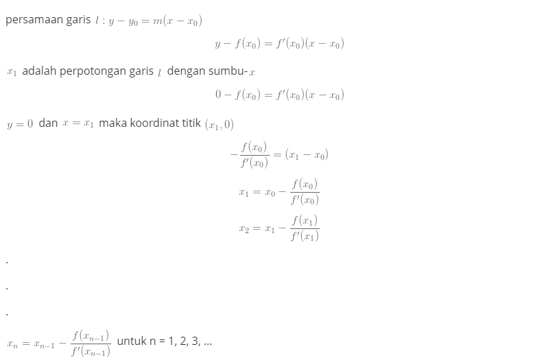

Tugas2
Program Metode Newton Raphson Pada Fungsi Non Linear¶
Metode Newthon Raphson¶
Metode Newton-Raphson adalah metode pencarian akar suatu fungsi f(x) dengan pendekatan satu titik, dimana fungsi f(x) mempunyai turunan. Metode ini dianggap lebih mudah dari Metode (Bisection Method) karena metode ini menggunakan pendekatan satu titik sebagai titik awal. Semakin dekat titik awal yang kita pilih dengan akar sebenarnya, maka semakin cepat konvergen ke akarnya.
Prosedur Metode Newton :

Algoritma Metode Newton Repshon¶

Listing Program¶
#Program python untuk memperkirakan akar polinomial
#menggunakan metode newton-raphson
import math
#f(x) - fungsi polynomial
def f(x):
function = (x**3) - (2*x) - 1
return function
def derivative(x): #berfungsi untuk menemukan turunan dari polinomial
h = 0.000001
derivative = (f(x + h) - f(x)) / h
return derivative
def newton_raphson(x):
return (x - (f(x) / derivative(x)))
# p - titik awal mis. nilai lebih dekat ke root
# n - jmulah iterasi
def perulangan(p, n):
print("Banyak Iterasinya =",n)
x = p
for i in range(n):
x = newton_raphson(x)
print("perulangan ke-", i + 1, "=", x)
return ("")
print(perulangan(1, 12)) #cetakan akar polinomial x ^ 3 - 2x - 1 menggunakan 3 iterasi dan ambil titik awal sebagai 1
Output:
Banyak Iterasinya = 12
perulangan ke- 1 = 2.999994000093219
perulangan ke- 2 = 2.199996832141079
perulangan ke- 3 = 1.7808294919560141
perulangan ke- 4 = 1.6363030634057565
perulangan ke- 5 = 1.618304588651506
perulangan ke- 6 = 1.6180340496697716
perulangan ke- 7 = 1.6180339887499484
perulangan ke- 8 = 1.6180339887498947
perulangan ke- 9 = 1.618033988749895
perulangan ke- 10 = 1.618033988749895
perulangan ke- 11 = 1.618033988749895
perulangan ke- 12 = 1.618033988749895